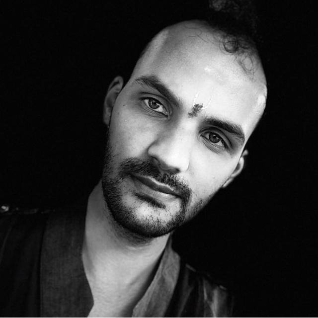
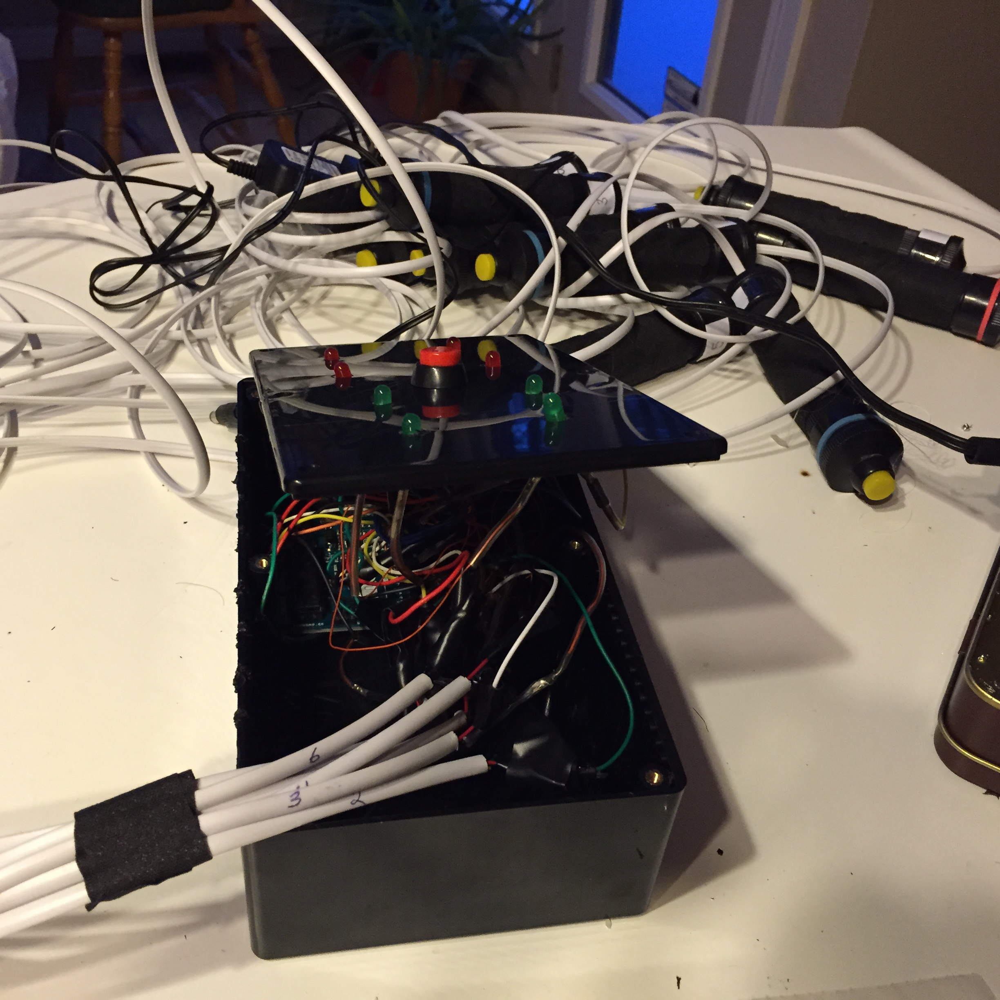
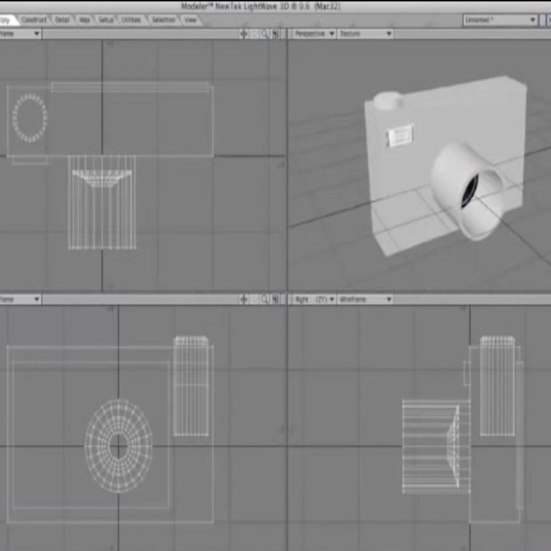
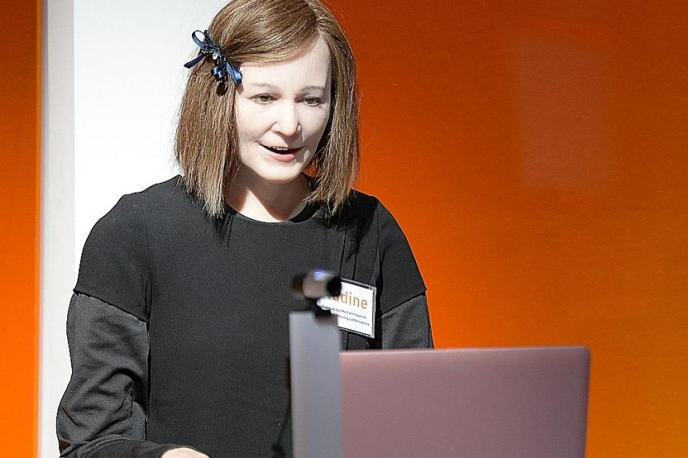

Currenty, I am post-doctoral research fellow in Rehabilitative Research Institute of Singapore, NTU working on the development of vision based perception module for an exo skeleton to be used by stroke patients.
I have interesting mix of research and industrial experience. During my first post doctorate, I had the opportunity to handle and work on the AI platform of Nadine social humanoid robot in IMI, NTU, Singapore. I carried over the experience and passion over to a startup industry, DEX-Lab AI AI, Singapore where I worked as an AI Research Scientist.
I was fortunate to have been co-advised by Nadia Magnenat Thalmann and Daniel Thalmann during both these stints.
I graduated from School of Electrical and Electronics Engineering, NTU, Singapore with a PhD specialized in Computer Vision. Specifically, my PhD thesis is titled "Pose-invariant Action Recognition for Automated Behavior Analysis". (Supervised by Assoc. Prof. Teoh Eam Khwang and Dr. Yau Wei-Yun)
My research interests span from Computer Vision, Artificial Intelligence, Social Robotics and Virtual Character embodiments, Human Computer Interaction (HCI).
Human action recognition with video data: research and evaluation challenges
Manoj Ramanathan, Wei-Yun Yau, Eam Khwang Teoh
Oral presentation, IEEE Transactions on Human-Machine Systems (2014).
Nadine Humanoid Social Robotics Platform
Manoj Ramanathan, Nidhi Mishra, Nadia Magnenat Thalmann,
Oral presentation, Computer Graphics International Conference (2019)
Can a Humanoid Robot be part of the Organizational Work Force? A User Study leveraging on Sentiment Analysis
Nidhi Mishra, Manoj Ramanathan, Ranjan Satapathy, Erik Cambria, Nadia Magnenat-Thalmann,
Oral presentation, IEEE RO-MAN (2019)
Survey of Speechless Interaction Techniques in Social Robotics
Manoj Ramanathan, Ranjan Satapathy, Nadia Magnenat Thalmann,
Book Chapter in Intelligent Scene Modelling and Human-Computer Interaction, Human Computer Interaction Series (Eds. Nadia Magnenat Thalmann, Jian J Zhang, Manoj Ramanathan, Daniel Thalmann)(2021)
Combining pose-invariant kinematic features and object context features for RGB-D action recognition
Manoj Ramanathan, Jaroslaw Kochanowicz, Nadia Magnenat Thalmann,
Oral presentation, International Journal of Machine Learning and Computing (2019)
Mutually reinforcing motion-pose framework for pose invariant action recognition
Manoj Ramanathan, Wei-Yun Yau, Nadia Magnenat Thalmann, Eam Khwang Teoh,
Oral presentation, International Journal of Biometrics (2019)
Pose-invariant kinematic features for action recognition
Manoj Ramanathan, Wei-Yun Yau, Eam Khwang Teoh, Nadia Magnenat Thalmann,
Oral presentation, IEEE APSIPA ASC (2017).
Real humans with virtual humans and social robots interactions (HCI)
Daniel Thalmann, Nadia Magnenat Thalmann, Manoj Ramanathan (2017)
Oral presentation, SIGGRAPH Asia 2017.
Pose-invariant action recognition for automated behaviour analysis
Manoj Ramanathan (2017),
Thesis, Nanyang Technological University (NTU), Singapore (2017)
Improving human body part detection using deep learning and motion consistency
Manoj Ramanathan, Wei-Yun Yau, Eam Khwang Teoh,
Oral presentation, International Conference on Control, Automation, Robotics and Vision (ICARCV) 2016.
Human posture detection using H-ELM body part and whole person detectors for human-robot interaction
Manoj Ramanathan, Wei Yun Yau, Eam Khwang Teoh
Proceedings of the Fourth International Conference on Human Agent Interaction (2016).
Human body part detection using likelihood score computations
Manoj Ramanathan, Wei-Yun Yau, Eam Khwang Teoh
Oral presentation, Computational Intelligence in Biometrics and Identity Management (CIBIM), 2014.
Meet Nadine, one of the world’s most human-like robots
Evangelia Baka, Manoj Ramanathan, Nidhi Mishra, Nadia Magnenat Thalmann
Oral presentation, ICDE (2018).
This section provides a list of my research projects so far.
Chloe is fully functional, customizable virtual human from Dex-lab. She can be customized to work as Office receptionist, Mall concierge, Elderly home assistant etc. Her AI platform can be customized and includes several vision, NLP, affective, memory models that allow her to interact and behave like a human. Please refer to DEX-Lab AI for more details.
Dexie is a social humanoid robot developed in Dex-lab. I have worked on the complete AI backend that controls her actions and behavior. Chloe and Dexie share a similar AI backend which can generate behaviors according to agent using it (virtual/physical). Dexie can be customized to work in different roles and organizations with several functionalities. Please refer to DEX-Lab AI for more details.
Nadine is one of the most realistic live-sized social humanoid robot with artificial skin, articulated hands and fingers (from IMI, NTU). I have worked on the development of AI backend (perception-processing-interaction of stimuli) of the robot since 2016. During this time, we have included several state of the art vision models (face, action recognition etc), NLP models (sentiment analysis, chatbots etc), emotion and memory models. She has also worked as receptionist in AIA, Singapore, caretaker in an Elderly home in Singapore. Please refer to my publilcations above on her for more details. Please see IMI, NTU, Singapore for Nadine's videos.
This was my PhD topic where I was first introduced to computer vision topics. I worked detecting actions in a pose-invariant manner from 2D action videos in unconstrained environment. I mainly tackled the problem of View-invariance and occlusion resistant RGB action recognition by proposing a Mutual reinforcing motion-pose framework inspired by control system architecture. Please refer to my above publication for more details.